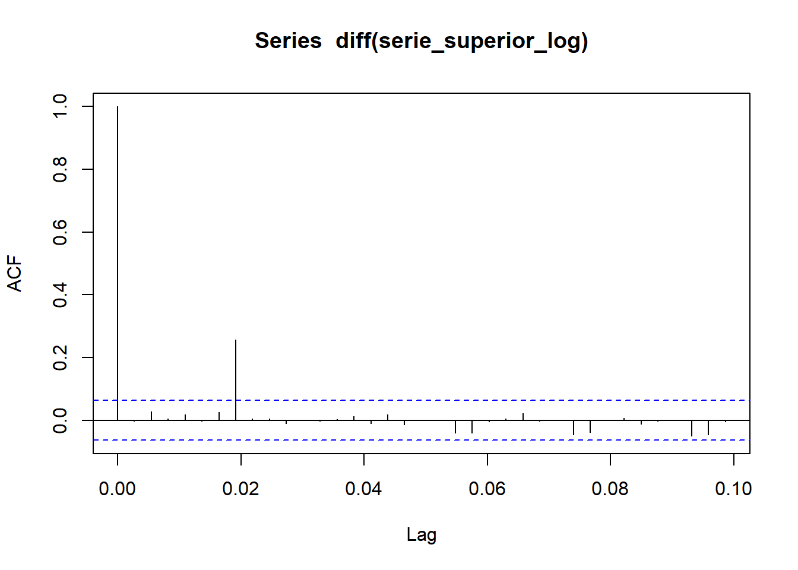

The following objects are masked from 'package:stats':
filter, lag
The following objects are masked from 'package:base':
intersect, setdiff, setequal, union
Warning: package 'corrplot' was built under R version 4.2.3
corrplot 0.92 loaded
# Lee los archivos CSVdf1 <-read.csv("Precios2021.csv", sep =";")df2 <-read.csv("Precios2022.csv", sep =";")df3 <-read.csv("Precios2023.csv", sep =";")# Concatena los dataframesdf_concatenado <-bind_rows(df1, df2, df3)# Resumen del datasetresumen <-summary(df_concatenado)# Imprimir el resumenprint(resumen)
FECHA Tipo.de.Cambio Superior Regular
Length:948 Min. :7.651 Min. :21.91 Min. :21.11
Class :character 1st Qu.:7.720 1st Qu.:28.79 1st Qu.:27.99
Mode :character Median :7.738 Median :33.30 Median :31.84
Mean :7.761 Mean :32.36 Mean :31.21
3rd Qu.:7.807 3rd Qu.:35.57 3rd Qu.:34.26
Max. :7.930 Max. :43.24 Max. :40.50
NA's :4
Diesel Bunker GLP.CILINDRO GLP.LIBRAS
Min. :17.61 Min. :13.40 Min. : 99.0 Min. :3.960
1st Qu.:23.09 1st Qu.:16.39 1st Qu.:120.0 1st Qu.:4.800
Median :27.98 Median :17.41 Median :122.0 Median :4.880
Mean :28.50 Mean :18.24 Mean :123.7 Mean :4.949
3rd Qu.:33.75 3rd Qu.:19.48 3rd Qu.:122.0 3rd Qu.:4.880
Max. :41.27 Max. :25.10 Max. :147.0 Max. :5.880
Analisis de los datos
Analisis exploratorio
Matriz de correlacion
# Calcular la matriz de correlación (excluyendo la columna de fecha)correlaciones <-cor(df_concatenado[, -1])# Crear el corplotcorrplot(correlaciones, method ="circle")
Como se puede observar en la grafica del corplot podemos ver que los precios de combustible Super, Regular y Diesel estan muy relacionados entre si teniendo mass de 0.8 de correlacion. Luego el Bunker tambien tiene un poco de relacion con estos precios pero ninguno tiene relacion con el Gas propano (GLP) que esta relacionado con 1 a 1 son su precion en cilindro o Libras.
Graficos de parejas
pairs(df_concatenado[, -1])
ggplot(data = df_concatenado, aes(x = Diesel, y = Superior)) +geom_point() +labs(x ="Diésel", y ="Gasolina Superior", title ="Gráfico de Dispersión entre Diésel y Gasolina Superior")
En el grafico de parejas podemos ver un poco como se comportan las relaciones de las variables siendo los proecios de Super con Diesel y Regular los que una representacion ams lineal tienen.
Histogramas
ggplot(data = df_concatenado, aes(x = Diesel)) +geom_histogram(binwidth =0.5) +labs(x ="Diésel", y ="Frecuencia", title ="Histograma de Diésel")
ggplot(data = df_concatenado, aes(x = Superior)) +geom_histogram(binwidth =0.5) +labs(x ="Gasolina Super", y ="Frecuencia", title ="Histograma de Super")
Analisis de la series de tiempo
# Cambia la columna FECHA a formato fechadf_concatenado$FECHA <-as.Date(df_concatenado$FECHA, format ="%d-%m-%y")
# Crear una serie de tiempo para cada variableserie_diesel <-ts(df_concatenado$Diesel,start=c(2021,1,1),frequency =365)serie_superior <-ts(df_concatenado$Superior,start=c(2021,1,1),frequency =365)
Analisis series de tiempo
# Por ejemplo, para la serie de diéselinicio_diesel <-start(serie_diesel)fin_diesel <-end(serie_diesel)frecuencia_diesel <-frequency(serie_diesel)print(inicio_diesel)
[1] 2021 1
print(fin_diesel)
[1] 2023 218
print(frecuencia_diesel)
[1] 365
# Por ejemplo, para la serie de diéselinicio_superior <-start(serie_superior)fin_superior <-end(serie_superior)frecuencia_superior <-frequency(serie_superior)print(inicio_superior)
[1] 2021 1
print(fin_superior)
[1] 2023 218
print(frecuencia_superior)
[1] 365
La serie de tiempo para los precios inicia el 1 de enero del 2021 y termina el dia 218 del 2023, osea el 6 de agosto del 2023, ademas que la frecuancia es de 1 año, 365 dias.
Visualizacion de la serie de tiempo
#Ver el serie_superior de la serieplot(serie_superior)abline(reg=lm(serie_superior~time(serie_superior)), col=c("red"))
Podemos observar Varias cosas dentro de la Composicion de la serie de tiempo:
La serie de tiempo tiene una tendencia alsista aunque la pendiente no es muy alta si tienede positivamente con el tiempo
La serie de tiempo presenta una estacionalidad de 12 meses
Determinacion de Estacionariedad
Estacionariedad en Varianza
# Gráfico de la serie de Diéselplot(serie_superior, main="Serie de Tiempo de Diésel")
Como se puede observar en la grafica la varianza no es constante y fluctua a traves del tiempo y al no haber datos negativos podemos aplicar una transofrmacion logaritmica.
# Aplicar la transformación logarítmicaserie_superior_log <-log(serie_superior)
Determinación de Estacionariedad en Media
# Prueba ADF para la serie de Diéselresultado_adf <-adf.test(serie_superior_log, alternative ="stationary")print(resultado_adf)
Augmented Dickey-Fuller Test
data: serie_superior_log
Dickey-Fuller = -2.7157, Lag order = 9, p-value = 0.2754
alternative hypothesis: stationary
Como el valor P no es menor a 0.05 se debe hacer la diferencia del valor para poder aceptar la hipotesis nula
# Diferenciación de primera ordenserie_diesel_diff <-diff(serie_superior_log)# Puedes repetir la prueba ADF en la serie diferenciadaresultado_adf_diff <-adf.test(serie_diesel_diff, alternative ="stationary")
Warning in adf.test(serie_diesel_diff, alternative = "stationary"): p-value
smaller than printed p-value
print(resultado_adf_diff)
Augmented Dickey-Fuller Test
data: serie_diesel_diff
Dickey-Fuller = -7.7951, Lag order = 9, p-value = 0.01
alternative hypothesis: stationary
Grafico de Autocorrelacion
#Gráfico de autocorrelaciónacf(serie_superior_log,36)
El grafo nos dice que no tiene estacionalidad por lo que ahcemos la diferenciacion
Garfico de Autocorrelacion
# funciones de autocorrelación y autocorrelación parcialacf(diff(serie_superior_log),36)

Con Una diferenciacion podemos ver que la grafica si converge
Grafico de Autocorrelacion Parcial
pacf(diff(serie_superior_log),760)
Al observar la autocorrelacion parcial de la serie de tiempo podemos ver que converge en 1 y obtenemos que la p puede ser 1
Modelos de Arima
Auto Arima
modelo_auto_arima <-auto.arima(serie_superior_log)# Ajustar el modelofit <-arima(serie_superior_log, c(0, 1, 1), seasonal =list(order =c(0, 1, 1), period =12))# Predecir 10 años adelante (asumiendo una frecuencia mensual)pred <-predict(fit, n.ahead =10*12)# Graficar la serie original y las prediccionests.plot(serie_superior_log, exp(pred$pred), log ="y", lty =c(1,3))
# Ajustar el modelofit2 <-arima(serie_superior_log, c(2, 1, 1), seasonal =list(order =c(0, 1, 0), period =12))# Predecir 120 periodos adelante (asumiendo una frecuencia mensual)forecastAP <-forecast(fit2, level =c(95), h =120)# Graficar las prediccionesautoplot(forecastAP)
Modelo con Arima (p=1,d=1,q=0)
# Ajustar el modelo ARIMA(1,1,0)modelo_arima_110 <-arima(serie_superior_log, order =c(1, 1, 0))summary(modelo_arima_110)
Call:
arima(x = serie_superior_log, order = c(1, 1, 0))
Coefficients:
ar1
0.0000
s.e. 0.0325
sigma^2 estimated as 9.942e-05: log likelihood = 3020.09, aic = -6036.19
Training set error measures:
ME RMSE MAE MPE MAPE MASE
Training set 0.0005355338 0.009966436 0.002703676 0.01567948 0.0770821 1.00015
ACF1
Training set -0.002881122
# Resumen del modelosummary(modelo_arima_110)
Call:
arima(x = serie_superior_log, order = c(1, 1, 0))
Coefficients:
ar1
0.0000
s.e. 0.0325
sigma^2 estimated as 9.942e-05: log likelihood = 3020.09, aic = -6036.19
Training set error measures:
ME RMSE MAE MPE MAPE MASE
Training set 0.0005355338 0.009966436 0.002703676 0.01567948 0.0770821 1.00015
ACF1
Training set -0.002881122
# Predicciones (opcional)predicciones_arima_110 <-forecast(modelo_arima_110, h =10) # 10 periodos adelanteplot(predicciones_arima_110)